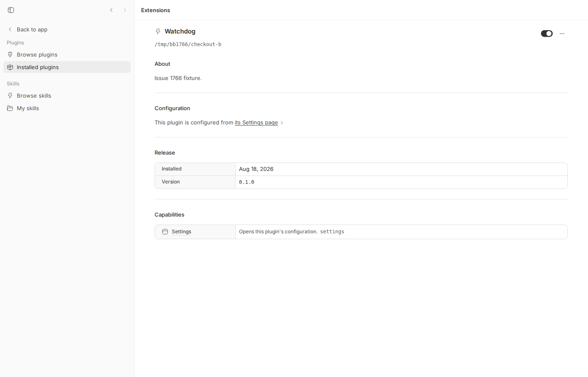
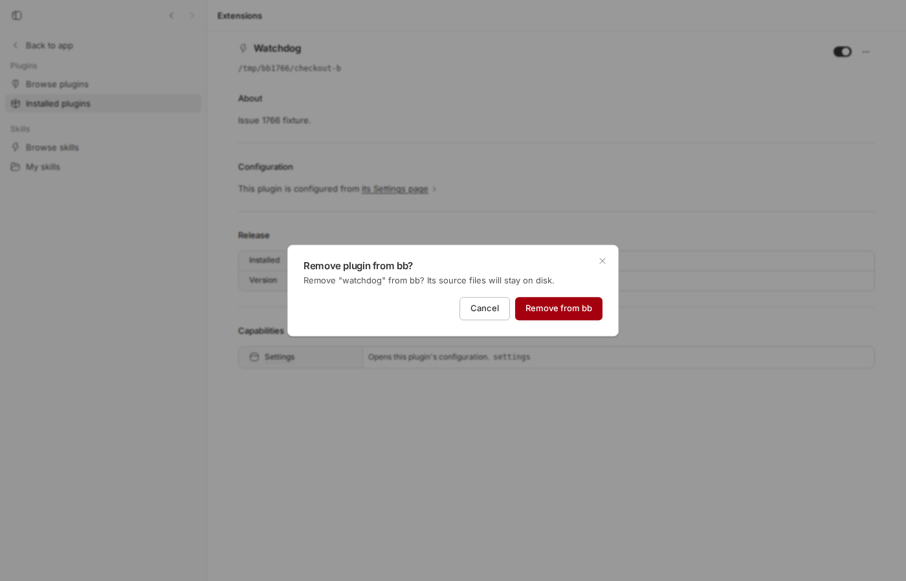

#1766 · Replacing a local plugin source destroys its settings silently: remove is the only supported path and it deletes plugin_settings
TL;DR
A plugin installed from a local directory (path: source) cannot be re-pointed at a different directory: bb plugin install path:<new dir> for the same plugin id fails with "already installed from path:<old dir>; remove it first", and bb plugin update treats path plugins as "pinned". So the only way to move a local plugin to a new checkout is bb plugin remove + bb plugin install. remove is deliberately written to delete the plugin's plugin_settings rows, its plugin_schedules rows and its secrets directory ("configuration goes with the registration"), while keeping kv/data.db. Nothing warns about this: the CLI help says local sources are "left alone", the web UI dialog for local plugins says only "Its source files will stay on disk", and the server writes no log line. After the reinstall the plugin reports running and silently uses its default settings. Reproduced end to end with the CLI on a dev instance and with a failing vitest at the service layer.
Claims vs findings
| Claim (from issue) | Status | Evidence |
|---|---|---|
| Replacing a local plugin destroys all persisted settings silently. | Verified | CLI session step 5: after remove+install, bb plugin config watchdog shows defaults "60"/"1440", token [not set]; no warning, no log line (dev.log only shows "plugin watchdog@0.1.0 loaded"). |
| The CLI offers no in-place replace for a local source; remove+install is the only route. | Verified | Step 3: HTTP 422: plugin id "watchdog" is already installed from path:/tmp/bb1766/checkout-a; remove it first. Code: apps/server/src/services/plugins/plugin-registration.ts:243. bb plugin update returns pinned for path rows: apps/server/src/services/plugins/plugin-updates.ts:273. |
remove deletes settings rows, schedules and the secrets dir. | Verified | apps/server/src/services/plugins/plugin-service.ts:1681: deletePluginSchedules, deleteAllPluginSettings, rm(pluginSecretsDir(...)). Vitest asserts getPluginSettingsValues is {} and secrets dir is ENOENT after remove. |
| Bundle locations "start-server.js ~311140 / ~31757" in bb 0.38. | Unverified | Did not inspect the 0.38 bundle; the quoted source text matches the TS source at HEAD exactly, so the citation is plausible. |
Not a reload problem: bb plugin reload preserves settings. | Verified | CLI step 2 and vitest "control" case: settings unchanged after reload. |
Not key orphaning: plugin_settings keyed by (plugin_id, key), no path column. | Verified | packages/db/src/data/plugin-storage.ts:83 reads by pluginId only. Same-path reinstall (allowed) keeps settings, proving the rows are keyed only by id. |
| Blast radius bounded to remove/install replacement, not every reload. | Verified | Same as above; only remove() calls the delete helpers. |
| Comment: docs/help never mention settings, schedules or secrets in connection with remove; "left alone" reads as non-destructive. | Verified | apps/cli/src/commands/plugin.ts:1843; guide text at packages/templates/src/templates/bb-guide-plugins.md:221. Additionally the web UI dialog for local plugins omits settings while the managed-plugin dialog mentions them: apps/app/src/views/ToolsView.tsx:364 (screenshot below). |
| Behaviour also affects a plugin's schedules and secrets. | Verified | Same removal block; vitest checks the secrets dir is gone and the secret reads back as { set: false }. |
Environment
- bb source at
16ceb3a540f81c1189efaffb27a39b1d9443abf5(main, 2026-08-18); the issue reports bb 0.38 on macOS. The removal code is unchanged since the plugin system landed in66ddc6018(#480), so the behaviour is present in every released version, including HEAD. Not fixed on main. - Linux 7.0.0-29-generic x86_64, Node v24.18.0.
- Dev instance via
scripts/bb-dev-app current: Apphttp://localhost:11232, Serverhttp://localhost:19232, host daemon127.0.0.1:27232, data dir~/.bb-dev/projects-bb-.claude-worktrees-wf_debcf606-e4a-1-628ef5e885b2. No provider turns were run (no agent usage needed). - Fixture: a two-file plugin (
package.jsonnamebb-plugin-watchdog→ idwatchdog,server.tsdefining three settings) copied into two directories/tmp/bb1766/checkout-aand/tmp/bb1766/checkout-bto model "reinstall from a new checkout".
Minimal reproduction
A. CLI, end to end (what the user did)
- Start a bb instance and create the fixture plugin in two directories (
package.json,server.ts):{ "name": "bb-plugin-watchdog", "version": "0.1.0", "bb": { "name": "Watchdog", "description": "Issue 1766 fixture.", "branding": { "icon": "Zap" }, "server": "./server.ts" } } export default async function plugin(bb: any) { bb.settings.define({ alertFloorMinutes: { type: "string", label: "Alert floor (min)", default: "60" }, staleWindowMinutes: { type: "string", label: "Stale window (min)", default: "1440" }, token: { type: "string", label: "Token", secret: true }, }); } - Run the script
1766/repro/repro.sh(usesnode packages/scripts/dist/commands/run-cli.jsasbb; substitute thebbbinary on a normal install):#!/usr/bin/env bash # CLI-level repro for get-bb/bb#1766 against a bb dev instance. # Usage: BB_SERVER_URL=http://localhost:19232 bash /tmp/bb1766/repro.sh set -u cd /home/USER/projects/bb/.claude/worktrees/wf_debcf606-e4a-1 BB="node packages/scripts/dist/commands/run-cli.js" run() { echo "\$ bb $*"; $BB "$@"; echo "[exit $?]"; echo; } echo "=== 1. Install the local plugin from checkout A and tune its settings ===" run plugin install --yes path:/tmp/bb1766/checkout-a run plugin config watchdog set alertFloorMinutes 1 run plugin config watchdog set staleWindowMinutes 3 run plugin config watchdog set token s3cret run plugin config watchdog echo "=== 2. Reload keeps settings (control) ===" run plugin reload watchdog run plugin config watchdog echo "=== 3. Try to install the same plugin id from a NEW checkout (B): refused ===" run plugin install --yes path:/tmp/bb1766/checkout-b echo "=== 4. Follow the error's advice: remove, then install from B ===" run plugin remove watchdog run plugin install --yes path:/tmp/bb1766/checkout-b echo "=== 5. Settings are back to defaults; plugin reports healthy ===" run plugin config watchdog run plugin list - Observed output (
cli-session.txt). Compare step 1 (tuned) with step 5 (after remove + install from the new checkout):=== 1. Install the local plugin from checkout A and tune its settings === $ bb plugin install --yes path:/tmp/bb1766/checkout-a Installing bb-plugin-watchdog@0.1.0 from /tmp/bb1766/checkout-a Plugins are full-trust code running inside the BB server. They can read all local BB data, including other plugins' secrets. Installed: watchdog@0.1.0 running [exit 0] $ bb plugin config watchdog set alertFloorMinutes 1 alertFloorMinutes = "1" (string) Alert floor (min) staleWindowMinutes = "1440" (string) Stale window (min) token = [not set] (string, secret) Token [exit 0] $ bb plugin config watchdog set staleWindowMinutes 3 alertFloorMinutes = "1" (string) Alert floor (min) staleWindowMinutes = "3" (string) Stale window (min) token = [not set] (string, secret) Token [exit 0] $ bb plugin config watchdog set token s3cret alertFloorMinutes = "1" (string) Alert floor (min) staleWindowMinutes = "3" (string) Stale window (min) token = [set] (string, secret) Token [exit 0] $ bb plugin config watchdog alertFloorMinutes = "1" (string) Alert floor (min) staleWindowMinutes = "3" (string) Stale window (min) token = [set] (string, secret) Token [exit 0] === 2. Reload keeps settings (control) === $ bb plugin reload watchdog watchdog@0.1.0 running [exit 0] $ bb plugin config watchdog alertFloorMinutes = "1" (string) Alert floor (min) staleWindowMinutes = "3" (string) Stale window (min) token = [set] (string, secret) Token [exit 0] === 3. Try to install the same plugin id from a NEW checkout (B): refused === $ bb plugin install --yes path:/tmp/bb1766/checkout-b Installing bb-plugin-watchdog@0.1.0 from /tmp/bb1766/checkout-b Plugins are full-trust code running inside the BB server. They can read all local BB data, including other plugins' secrets. Error: HTTP 422: plugin id "watchdog" is already installed from path:/tmp/bb1766/checkout-a; remove it first [exit 1] === 4. Follow the error's advice: remove, then install from B === $ bb plugin remove watchdog Removed watchdog. [exit 0] $ bb plugin install --yes path:/tmp/bb1766/checkout-b Installing bb-plugin-watchdog@0.1.0 from /tmp/bb1766/checkout-b Plugins are full-trust code running inside the BB server. They can read all local BB data, including other plugins' secrets. Installed: watchdog@0.1.0 running [exit 0] === 5. Settings are back to defaults; plugin reports healthy === $ bb plugin config watchdog alertFloorMinutes = "60" (string) Alert floor (min) staleWindowMinutes = "1440" (string) Stale window (min) token = [not set] (string, secret) Token [exit 0] $ bb plugin list ask-user-question@0.1.0 disabled automations@0.1.0 running connect@0.1.0 running custom-instructions@0.1.0 running inline-vis@0.1.0 running keep-awake@0.1.0 running provider-acp@0.1.0 running provider-claude-code@0.1.0 running provider-codex@0.1.0 running provider-pi@0.1.0 running provider-retry@0.1.0 disabled secrets@0.1.0 running side-chat@0.1.0 running watchdog@0.1.0 running workflows@0.1.0 disabled [exit 0]
Expected: either an in-place way to point the plugin at
checkout-b, or a warning atremovetime that settings/secrets/schedules will be lost, or settings preserved across the remove/install of the same id. Actual:Removed watchdog., thenwatchdog@0.1.0 runningwithalertFloorMinutes = "60",staleWindowMinutes = "1440",token = [not set].
B. Web UI: the confirmation dialog for local plugins does not mention settings

/extensions/plugins/watchdog) after the reinstall from /tmp/bb1766/checkout-b: enabled, healthy, no hint that configuration was reset.
C. Failing unit test at the service layer
File: apps/server/test/services/plugins/issue-1766-local-replace-loses-settings.test.ts. Run from apps/server: pnpm exec vitest run test/services/plugins/issue-1766-local-replace-loses-settings.test.ts. Two control cases pass (reload and same-path reinstall keep settings; new-path install is refused). The third case fails on main at the final toMatchObject: settings are back to "60"/"1440" and token: { set: false }.
// Repro for get-bb/bb#1766: replacing a local (path:) plugin from a new
// checkout is only possible via `remove` + `install`, and `remove` deletes
// plugin_settings / schedules / secrets for the id.
import { mkdtemp, mkdir, rm, stat, writeFile } from "node:fs/promises";
import { tmpdir } from "node:os";
import { join } from "node:path";
import { afterEach, beforeEach, describe, expect, it } from "vitest";
import {
createConnection,
getPluginSettingsValues,
migrate,
type DbConnection,
} from "@bb/db";
import type { Logger } from "@bb/logger";
import {
createPluginService,
type PluginService,
} from "../../../src/services/plugins/plugin-service.js";
import { pluginSecretsDir } from "../../../src/services/plugins/plugin-settings.js";
import { testLogger } from "../../helpers/test-app.js";
import { createNoopTelemetryService } from "../../../src/services/system/telemetry.js";
const logger = testLogger as unknown as Logger;
const SERVER_SOURCE = `
export default async function plugin(bb: any) {
const settings = bb.settings.define({
alertFloorMinutes: { type: "string", label: "Alert floor (min)", default: "60" },
staleWindowMinutes: { type: "string", label: "Stale window (min)", default: "1440" },
token: { type: "string", label: "Token", secret: true },
});
(globalThis as any).__watchdog = { settings };
}
`;
// Same plugin id (package name -> "watchdog") written to two different
// directories, like two checkouts of the same repo.
async function writeCheckout(dir: string): Promise<string> {
await mkdir(dir, { recursive: true });
await writeFile(
join(dir, "package.json"),
JSON.stringify({
name: "bb-plugin-watchdog",
version: "0.1.0",
bb: {
name: "Watchdog fixture",
description: "Issue 1766 fixture.",
branding: { icon: "Zap" },
server: "./server.ts",
},
}),
);
await writeFile(join(dir, "server.ts"), SERVER_SOURCE);
return dir;
}
describe("issue #1766: local plugin replace destroys settings", () => {
let db: DbConnection;
let workDir: string;
let dataDir: string;
let service: PluginService;
let checkoutA: string;
let checkoutB: string;
beforeEach(async () => {
db = createConnection(":memory:");
migrate(db);
workDir = await mkdtemp(join(tmpdir(), "bb-issue-1766-"));
dataDir = join(workDir, "data");
checkoutA = await writeCheckout(join(workDir, "checkout-a"));
checkoutB = await writeCheckout(join(workDir, "checkout-b"));
service = createPluginService({
telemetry: createNoopTelemetryService(),
db,
hub: {
getDaemonSessionIdForHost: () => null,
notifyPluginSignal: () => 0,
notifySystem: () => {},
},
logger,
dataDir,
appVersion: "0.9.0",
loadTimeoutMs: 2000,
});
});
afterEach(async () => {
await service.stop();
await rm(workDir, { recursive: true, force: true });
});
async function installAndTune(): Promise<void> {
const entry = await service.installPath(checkoutA);
expect(entry.status).toBe("running");
await service.updateSettings("watchdog", {
alertFloorMinutes: "1",
staleWindowMinutes: "3",
token: "s3cret",
});
expect(getPluginSettingsValues(db, "watchdog")).toEqual({
alertFloorMinutes: JSON.stringify("1"),
staleWindowMinutes: JSON.stringify("3"),
});
await expect(
stat(join(pluginSecretsDir(dataDir, "watchdog"), "token")),
).resolves.toBeDefined();
}
it("control: reload and same-path reinstall keep tuned settings", async () => {
await installAndTune();
await service.reload("watchdog");
expect((await service.getSettings("watchdog"))?.values).toMatchObject({
alertFloorMinutes: "1",
staleWindowMinutes: "3",
token: { set: true },
});
// Re-installing from the SAME path is allowed and preserves settings.
await service.installPath(checkoutA);
expect((await service.getSettings("watchdog"))?.values).toMatchObject({
alertFloorMinutes: "1",
staleWindowMinutes: "3",
token: { set: true },
});
});
it("installing the same plugin id from a NEW checkout is refused; there is no in-place replace", async () => {
await installAndTune();
await expect(service.installPath(checkoutB)).rejects.toThrow(
/already installed from path:.*checkout-a; remove it first/,
);
// The refusal is harmless: settings survive.
expect(getPluginSettingsValues(db, "watchdog")).toEqual({
alertFloorMinutes: JSON.stringify("1"),
staleWindowMinutes: JSON.stringify("3"),
});
});
it("BUG: remove + install from the new checkout silently resets to defaults", async () => {
await installAndTune();
// The only supported route to move a path: plugin: remove, then install.
expect(await service.remove("watchdog")).toBe(true);
// Removal wiped plugin_settings rows and the secrets dir for the id.
expect(getPluginSettingsValues(db, "watchdog")).toEqual({});
await expect(
stat(pluginSecretsDir(dataDir, "watchdog")),
).rejects.toMatchObject({ code: "ENOENT" });
const entry = await service.installPath(checkoutB);
expect(entry.status).toBe("running");
const view = await service.getSettings("watchdog");
// What the operator tuned. This assertion FAILS on main: the plugin is
// back on defaults ("60" / "1440", token unset) with no warning.
expect(view?.values).toMatchObject({
alertFloorMinutes: "1",
staleWindowMinutes: "3",
token: { set: true },
});
});
});
Output (vitest-output.txt):
RUN v4.1.1 /home/USER/projects/bb/.claude/worktrees/wf_debcf606-e4a-1/apps/server
✓ @bb/server test/services/plugins/issue-1766-local-replace-loses-settings.test.ts > issue #1766: local plugin replace destroys settings > control: reload and same-path reinstall keep tuned settings 162ms
✓ @bb/server test/services/plugins/issue-1766-local-replace-loses-settings.test.ts > issue #1766: local plugin replace destroys settings > installing the same plugin id from a NEW checkout is refused; there is no in-place replace 68ms
× @bb/server test/services/plugins/issue-1766-local-replace-loses-settings.test.ts > issue #1766: local plugin replace destroys settings > BUG: remove + install from the new checkout silently resets to defaults 83ms
→ expected { alertFloorMinutes: '60', …(2) } to match object { alertFloorMinutes: '1', …(2) }
⎯⎯⎯⎯⎯⎯⎯ Failed Tests 1 ⎯⎯⎯⎯⎯⎯⎯
FAIL @bb/server test/services/plugins/issue-1766-local-replace-loses-settings.test.ts > issue #1766: local plugin replace destroys settings > BUG: remove + install from the new checkout silently resets to defaults
AssertionError: expected { alertFloorMinutes: '60', …(2) } to match object { alertFloorMinutes: '1', …(2) }
- Expected
+ Received
{
- "alertFloorMinutes": "1",
- "staleWindowMinutes": "3",
+ "alertFloorMinutes": "60",
+ "staleWindowMinutes": "1440",
"token": {
- "set": true,
+ "set": false,
},
}
❯ test/services/plugins/issue-1766-local-replace-loses-settings.test.ts:154:26
152| // What the operator tuned. This assertion FAILS on main: the plug…
153| // back on defaults ("60" / "1440", token unset) with no warning.
154| expect(view?.values).toMatchObject({
| ^
155| alertFloorMinutes: "1",
156| staleWindowMinutes: "3",
⎯⎯⎯⎯⎯⎯⎯⎯⎯⎯⎯⎯⎯⎯⎯⎯⎯⎯⎯⎯⎯⎯⎯⎯[1/1]⎯
Test Files 1 failed (1)
Tests 1 failed | 2 passed (3)
Start at 04:37:25
Duration 2.85s (transform 1.40s, setup 0ms, import 2.46s, tests 314ms, environment 0ms)
Root cause
Two independent decisions combine into the data loss:
- Registration refuses a same-id install from a different path, and there is no update path for
path:plugins.apps/server/src/services/plugins/plugin-registration.ts:243—rowMatchesInstallSourcecomparesrow.sourcePath === intent.canonicalPathfor path intents (apps/server/src/services/plugins/plugin-registration.ts:152); any other path throws "already installed from …; remove it first".bb plugin updateis a no-op for path rows (apps/server/src/services/plugins/plugin-updates.ts:273).function assertInstallRegistrationAvailable(existing, identity, pluginId) { if (existing === undefined) return; if (!rowMatchesInstallSource(existing, identity.provenance, identity.sourceIntent)) { throw new Error( `plugin id "${pluginId}" is already installed from ${existing.source}; remove it first`, ); } ... } // rowMatchesInstallSource, for path: sources if (intent.kind === "path") return row.sourcePath === intent.canonicalPath;if (args.row.sourceKind === "path" || args.row.sourceKind === "builtin") { return { outcome: "pinned", current: installed }; } remove()deletes configuration by design.apps/server/src/services/plugins/plugin-service.ts:1666. The comment states the rationale: "a future same-id plugin must not inherit secrets". That is a sound security rule for a different plugin that happens to reuse an id, but it is applied unconditionally, including to the same plugin being re-registered from a new directory by the same operator, and it takes non-secret settings and schedules along with the secrets. kv rows anddata.dbare explicitly kept, so bb already distinguishes "plugin data" from "registration configuration"; the issue is which bucket settings land in and that the user is never told.async remove(id) { return withPluginOperationLock(REGISTRATION_MUTATION_KEY, async () => { const row = getInstalledPlugin(deps.db, id); await withLifecycleLock(id, () => disposeOne(id)); ... const removed = row ? row.sourceKind === "builtin" ? markInstalledPluginRemoved(deps.db, id) : deleteInstalledPlugin(deps.db, id) : false; if (removed && row) { forgetMutableRoot(row.rootDir); // Configuration goes with the registration (a future same-id plugin // must not inherit secrets); kv rows and data.db are plugin data and // survive a remove/reinstall cycle. Schedule rows belong to the // registration too. deletePluginSchedules(deps.db, id); deleteAllPluginSettings(deps.db, id); await rm(pluginSecretsDir(deps.dataDir, id), { recursive: true, force: true, }); // ... path: sources are the user's directory and are never deleted.
Why it is silent. The DELETE route (apps/server/src/routes/plugins.ts:507) returns { ok: true }, remove() emits no log line, the CLI prints Removed <id>., and both user-facing descriptions understate the effect: the CLI help (apps/cli/src/commands/plugin.ts:1843) and the app dialog for local plugins (apps/app/src/views/ToolsView.tsx:364):
plugin
.command("remove <id>")
.description(
"Remove an installed plugin (git:/npm: managed files are deleted; local path sources are left alone)",
)
description={
pluginIsLocalSource(deleteTarget)
? `Remove "${deleteTarget.id}" from bb? Its source files will stay on disk.`
: `Uninstall "${deleteTarget.id}" and delete its managed files and settings?`
}
Note the UI dialog for managed (git/npm) plugins does say "and settings", so the local-path branch is the one that is inaccurate — precisely the branch a user hits when they reinstall from a new checkout.
Deeper issue. A path plugin's identity in bb is (plugin id, canonical path). Moving a checkout is a routine operation for local plugin authors and operators, but bb has no "re-point" primitive; it forces users through the destructive uninstall path and describes that path as non-destructive for exactly this source kind. The plugin's own SDK-visible settings.onChange also does not fire (the plugin instance is disposed before deletion), so the plugin cannot observe or defend against the reset.
Proposed fix (first principles)
Confident. Smallest complete change (server owns product policy, so all of this is in apps/server + CLI/app text):
- Add an in-place path replace. In
assertInstallRegistrationAvailable/registerInstalled, when the existing row issourceKind === "path", provenance isdirect, and the new intent is alsopath, allow the registration: dispose the old instance,upsertInstalledPluginwith the newsource/sourcePath/rootDir,forgetMutableRoot(old rootDir), thenloadOne. Settings, secrets and schedules are keyed by plugin id only, so they are preserved automatically. Same-path reinstall already takes this route today, so it is a relaxation of one predicate, not a new flow. Expose it as-is (path plugins are the author's own directory, and the "already installed" refusal today protects nothing that the same-path reinstall does not already allow) or behindbb plugin install --replace/POST /plugins { replace: true }if the refusal should stay the default.// apps/server/src/services/plugins/plugin-registration.ts (installPathSource / registerInstalled) // Treat a same-id, same-kind (path -> path) install as an in-place source move: // - keep plugin_settings, secrets dir and schedules (they are keyed by plugin id only) // - dispose the old instance, upsert the row with the new sourcePath/rootDir, loadOne() // - forgetMutableRoot(oldRootDir) // i.e. in assertInstallRegistrationAvailable, do NOT throw when // existing.sourceKind === "path" && intent.kind === "path" && provenance is "direct", // and let upsertInstalledPlugin overwrite source/sourcePath/rootDir. // Gate it behind an explicit flag if you want the old refusal to stay the default: // bb plugin install --replace path:/new/checkout (POST /plugins { source, replace: true }) - Make remove loud and honest. Update the CLI description and the guide/skill text (
apps/cli/src/commands/plugin.ts:1846,packages/templates/src/templates/bb-guide-plugins.md:221) and the local-plugin dialog copy inToolsView.tsxto state that settings, secrets and schedules are deleted (kv/data.db kept). Add alogger.infoinremove()listing what was deleted. Optionally require--yeswhen settings/secrets exist, mirroringplugin install's confirmation. - Optionally, keep the "must not inherit secrets" rule but scope it: continue to delete the secrets dir on remove, but retain
plugin_settings/schedules; the risk profile of non-secret settings is far lower and the current comment only justifies deleting secrets.
What could go wrong: (1) changes the meaning of "already installed" for path sources: a user installing a different local plugin that reuses an id would silently replace the first one — mitigated by the --replace flag or by keeping the refusal but printing a hint that --replace exists. (2) The install-with-lock path already handles disposal and rollback (registerInstalled reloads the previous row on failure), so a failed replace leaves the old registration loaded. (3) No wire change to the host daemon; no HOST_DAEMON_PROTOCOL_VERSION bump needed. (4) Per AGENTS.md, a new CLI flag must be reflected in the guide/skill in the same change.
PR review
No linked pull requests at the time of this report.
Related issues
- #1565 Env destroy deletes registered path-sourced plugins (closed) — the other case where a local-path plugin's lifecycle is more destructive than the user expects; the fix there added a warning in
installPathSourceabout bb-managed workspaces, which is a precedent for a warning at remove time. - Origin commit of the removal semantics: 66ddc6018 (#480, plugin system phases 1–3).
Appendix
Commands run
gh issue view 1766 --comments pnpm install --frozen-lockfile --prefer-offline pnpm exec turbo run build grep -rn "deleteAllPluginSettings\|deletePluginSchedules\|pluginSecretsDir" apps/server/src git log --oneline -S"deleteAllPluginSettings" -- apps/server/src # -> 66ddc6018 only cd apps/server && pnpm exec vitest run test/services/plugins/issue-1766-local-replace-loses-settings.test.ts scripts/bb-dev-app current # App :11232 Server :19232 export BB_SERVER_URL=http://localhost:19232 BB_HOST_DAEMON_PORT=27232 BB_PROJECT_ID=proj_personal bash /tmp/bb1766/repro.sh # CLI session above dev-browser --browser bb1766 --headless run /tmp/bb1766/remove-dialog.js # screenshots pnpm dev:stop
Server log excerpt during the CLI session (no remove/settings log line)
[04:38:48] INFO: [server] plugin watchdog@0.1.0 loaded # install from checkout-a [04:38:51] INFO: [server] plugin watchdog@0.1.0 loaded # reload [04:38:53] INFO: [server] plugin watchdog@0.1.0 loaded # install from checkout-b (after remove; nothing logged for the remove)
Repro artifacts
issue-1766-local-replace-loses-settings.test.tsvitest-output.txtrepro.sh,cli-session.txtfixture-package.json,fixture-server.ts- assets/1766-plugin-detail.png, assets/1766-remove-dialog.png
{kind=link}
{kind=link}